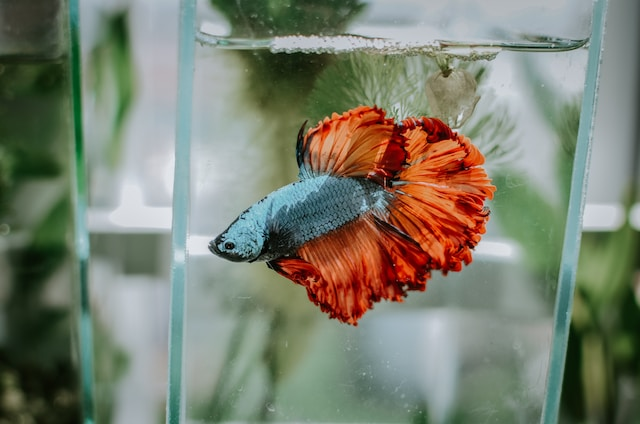

Ikan Cupang
Ikan cupang adalah ikan yang sangat digemari oleh banyak orang, pada masa covid19 harga ikan cupang melambung jauh diakibatkan karena banyaknya permintaan dari pembeli. ikan ini memiliki ekor yang menarik dengan kombinasi warna yang bemacam-macam. ikan ini tergolo mudah untuk dipelihara, dikarenakan ikan ini teritorial jadi ikan ini harus dipisahkan wadahnya dari ikan lain.